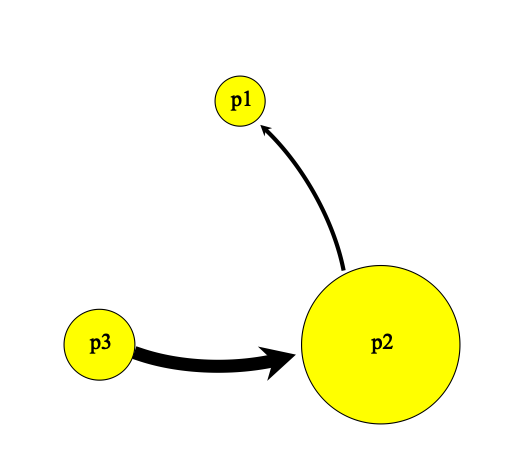
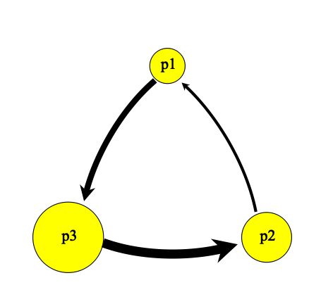
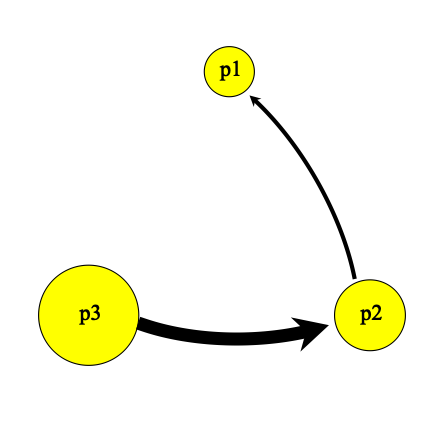
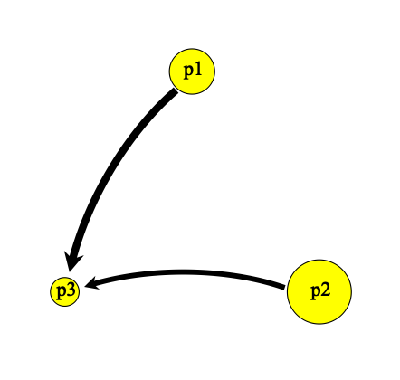
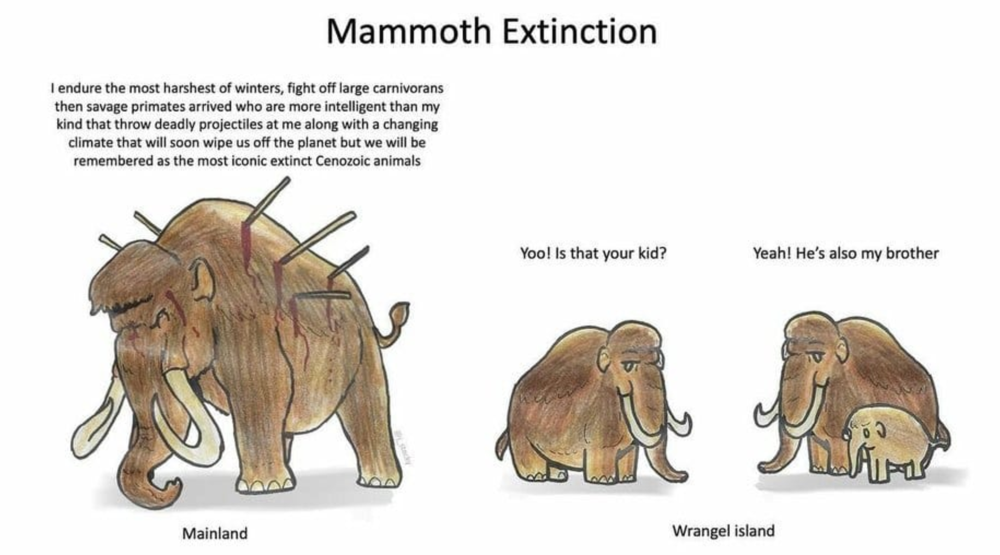

3.14 Week 3 Assignment
3.14.1 Multiple Populations - Graphic
The goal of your work this week will be to explore migration between different populations. Start with an initialize statement and early events (either based on code from class, the default SLiM recipe, or a situation of your own design).
Try to recreate in SLiM the following population dynamics. Remember that to visualize your populations, click the bar chart emoji on the right (above the output) and then click “Graph Population Visualization.” If you’re able to recreate these graphics, great! Just drop us an email saying you did it and let us know if you have any questions or comments. If you can’t get it to work, send us your SLiM code and some specific questions/pain points and we’ll address it with you via email.
Use relatively small population sizes for each (e.g., 500, 2000, 5000) to help the simulations run quickly. You can slow down the appearance of the simulation using the time-bar on the top right of your SLiM window.
- Example 1

- Example 2

- Example 3

- Example 4

3.14.2 Multiple Populations - Real World
Try to develop SLiM code to investigate the following real-world situations. Feel free to use comments in your code to detail each step. Email us with your resulting SLiM code (preferably saved as a .txt file) and let us know if this went well or if you struggled with any code or concept.
- Stickleback Fish
There are two populations of a fish species - one at the top of a river and one at the bottom. Develop a model that allows for some migration between the two populations, with the knowledge that more fish swim downriver (i.e., with the current) than upriver. Update your model to include an intermediate population, that develops mid-river. Allow migration between all three populations at different rates, based on the up vs. downriver and distance between them.
- Woolly Mammoth on Wrangel Island
There are two populations of woolly mammoths - a large (n = 4500) population on the mainland and a small (n = 450) population on Wrangel Island. For some generations, bidirectional migration is allowed between the populations via an ice bridge. However, after some time, the ice bridge melts, and migration ends. First, simulate migration between the two populations.
Then, track the allele frequency (using code from week 2) of a slightly deleterious allele in each population. How often does it fix in the larger, mainland population? How often does it fix in the smaller, island population? You can also use the following block of code to look at the mean fitness of both populations, if you want to observe how removing the ice bridge impacts fitness of your populations:
10000 early() {
p1MeanFitness = mean(p1.cachedFitness(NULL));
p2MeanFitness = mean(p2.cachedFitness(NULL));
print(paste(p1MeanFitness, p2MeanFitness, sep= " "));
}
Here’s a paper if you’re curious about this (you can just glance at the abstract): https://journals.plos.org/plosgenetics/article?id=10.1371/journal.pgen.1006601.
- European Mice
There are two distinct populations of mice in western Europe. A hybrid zone (here, a third population) forms based on individuals from both of the original populations. This third population has some very limited migration back to the original two populations. (This represents an example of limited backflow - meaning the two populations can hybridize and reproduce, but the hybrids don’t usually reproduce with the original individuals. Rather, they stay among themselves.)
Hint: in SLiM you can’t use the same syntax to create an empty population. Try starting the hybrid population with just one individual.